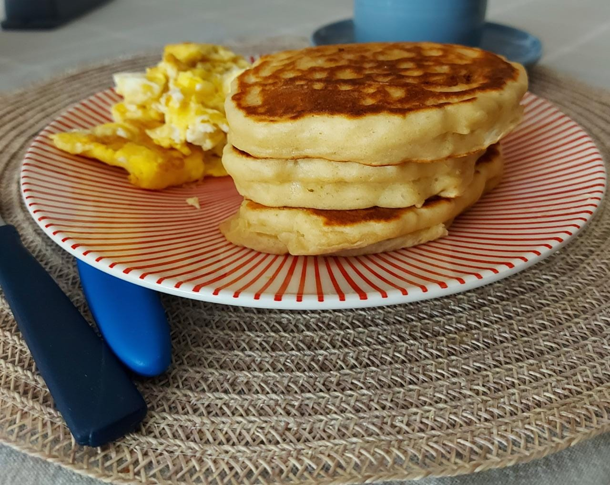

Fluffy Doughy Pancakes

Description
Pancakes.The nutritious breakfast every body needs if we really don't know what even "healthy" at this point means.But we all love them,and something that sometimes we can't agree upon is that some like it fluffy,other doughy.I love them both.Reason why,here I am with a new recipes for you and your love ones (or soon-to-be love ones) can enjoy.
Although unsual this time I do have to recommend to make this at the moment as it will NOT taste the same after a few hours.
Ingredients
- 950 gr Buttermilk
- 670 gr All Purpose Flour
- 4 Eggs
- 170 gr Melted Butter
- 6 gr Salt
- 10 gr Baking Soda
- 3 gr Baking Podwer
Steps
- We will start mixing all our dry ingredients in a mixing bowl,if necessary sift them.
- In another bowl we'll add the rest of them and whisk them until an homogeneous mix has been achieved.
- It's time to add both mixtures in the biggest bowl (at once,not through parts) mix them with a rubber spatula until a mix ressembling to oatmeal while being cooked has been achieved. (so expect lumps,yeah)
- Finally,drop a spoon-size of your choice into a grease pan (ideally cast-iron) and cook them until small bubbles are present in the uncooked side.
- Ready to eat them? Spread some butter and a splash of maple syrup and enjoy!
Homepage